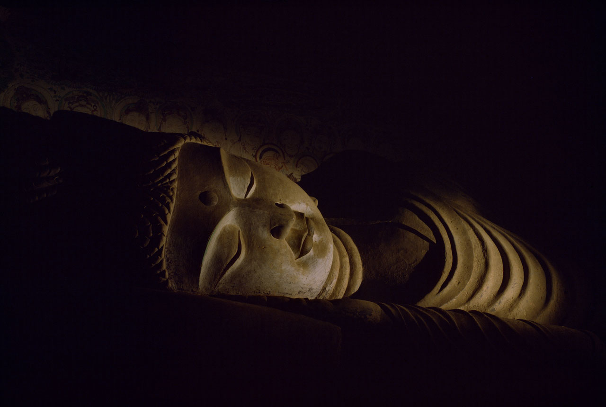
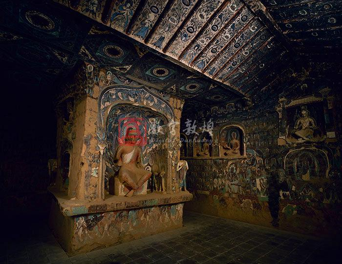
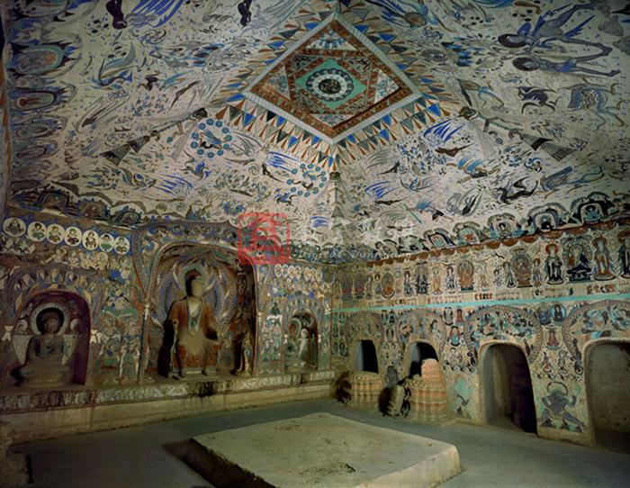
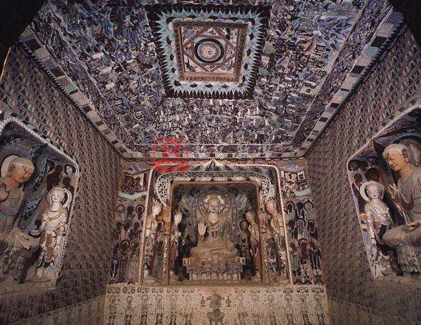
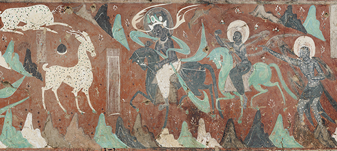

让文化的入口，回到影像本身。
EXPLORE THE CAVES
显示 3 个洞窟

北魏 / 中心塔柱式
从中心塔柱出发，理解洞窟的空间结构。

西魏 / 洞窟影像
借助全景目录，建立图像与地点的关联。

隋朝 / 三龛窟
先浏览全貌，再进入壁面和细节。
没有匹配的洞窟。请清除条件，或尝试其他编号。
LOOK CLOSER
第257窟 · 九色鹿本生故事公开预览

本地仅放大公开预览，不能增加图像精度。方向键或滚动条移动；高清分块影像请到原站。